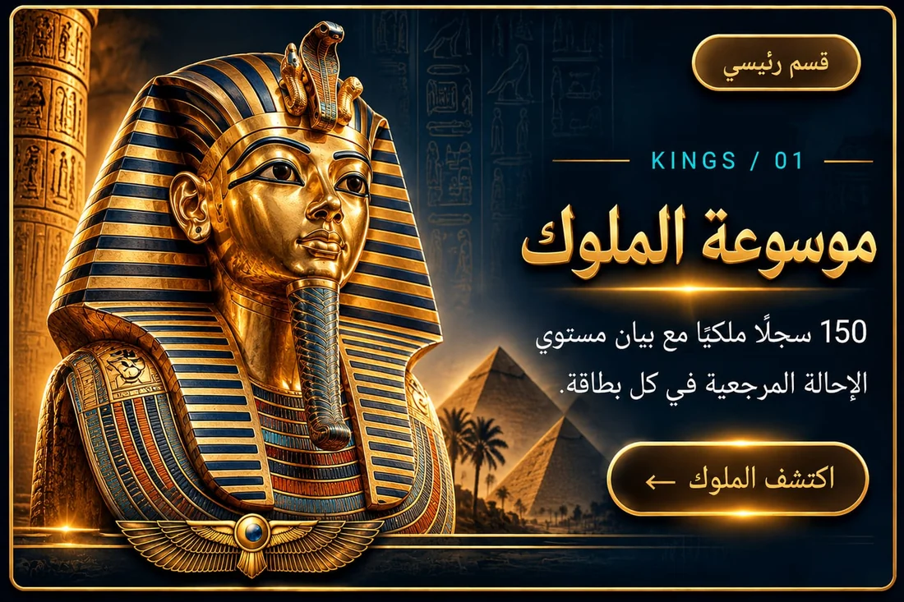
قسم رئيسي01 / KINGS
موسوعة الملوك
149 سجلًا ملكيًا مع بيان مستوى الإحالة المرجعية في كل بطاقة.
اكتشف الملوك ←بيت الحياة — بوابتك لاكتشاف ملوك مصر القديمة، وديانتها، وعصورها، ومواقعها الأثرية في موسوعة معرفية تفاعلية.
مسارات معرفية تجمع التاريخ والآثار والفن في تجربة واحدة.

قسم رئيسي149 سجلًا ملكيًا مع بيان مستوى الإحالة المرجعية في كل بطاقة.
اكتشف الملوك ←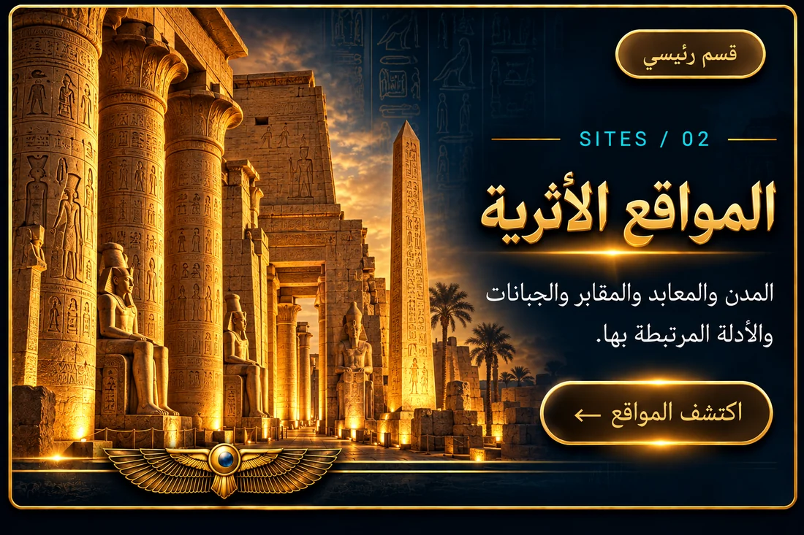
قسم رئيسيالمدن والمعابد والمقابر والجبانات والأدلة المرتبطة بها.
اكتشف المواقع ← قسم رئيسي
قسم رئيسيالمعبودات والطقوس والنصوص الجنائزية والتصورات الدينية.
اكتشف المعتقدات ←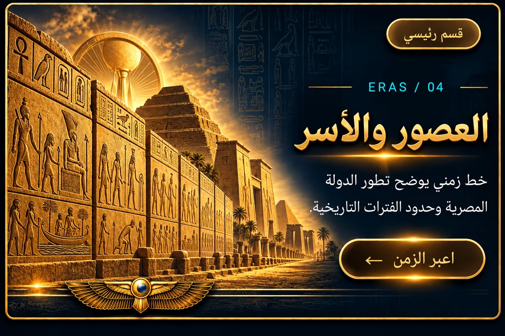
قسم رئيسيخط زمني يوضح تطور الدولة المصرية وحدود الفترات التاريخية.
اعبر الزمن ←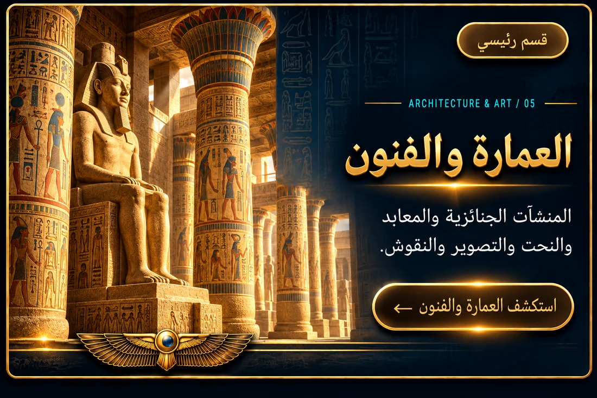
قسم رئيسيالمنشآت الجنائزية والمعابد والنحت والتصوير والنقوش.
استكشف العمارة والفنون ←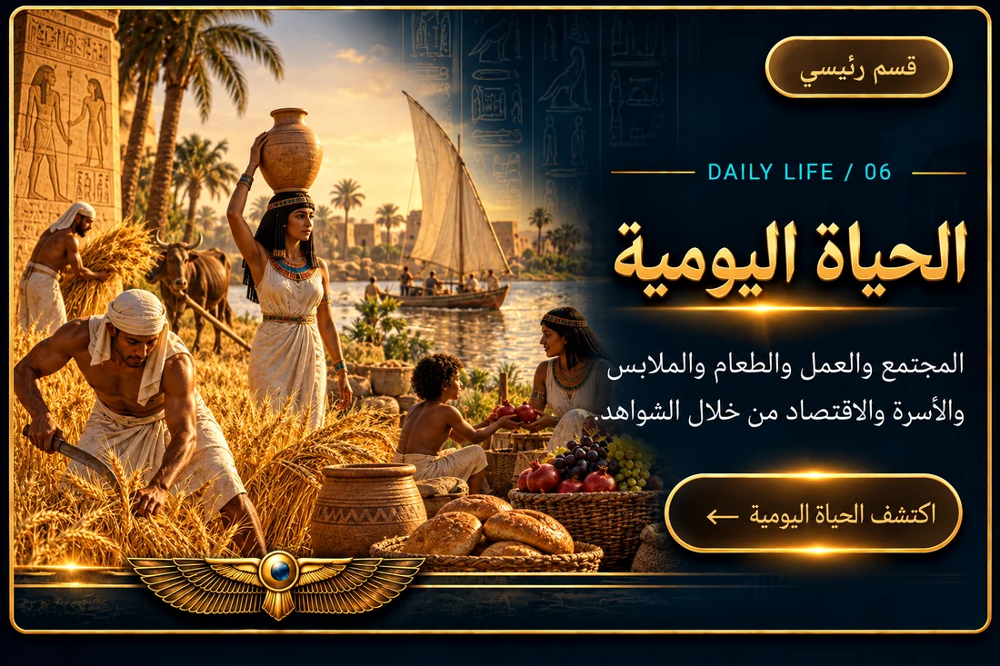
قسم رئيسيالمجتمع والعمل والطعام والملابس والأسرة والاقتصاد من خلال الشواهد.
اكتشف الحياة اليومية ←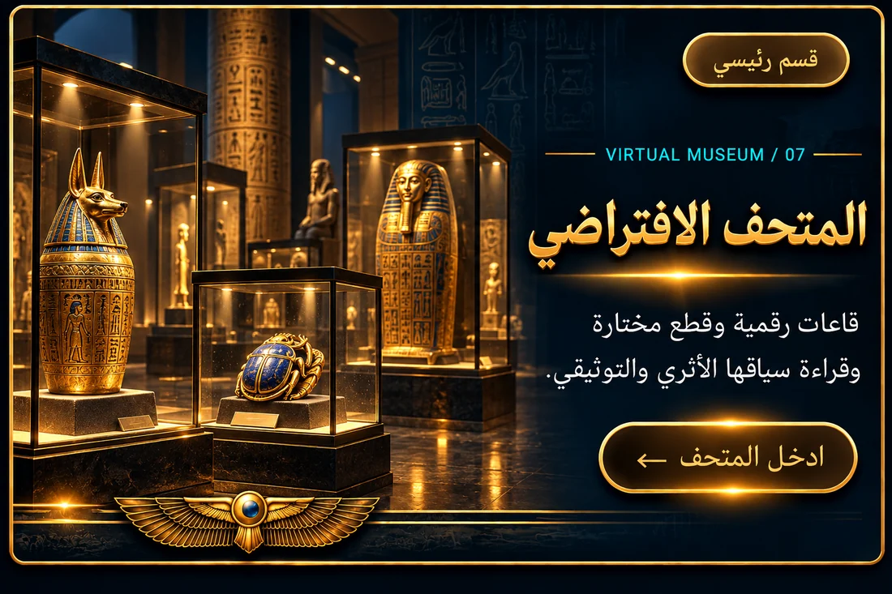
قسم رئيسيقاعات رقمية وقطع مختارة وقراءة سياقها الأثري والتوثيقي.
ادخل المتحف ←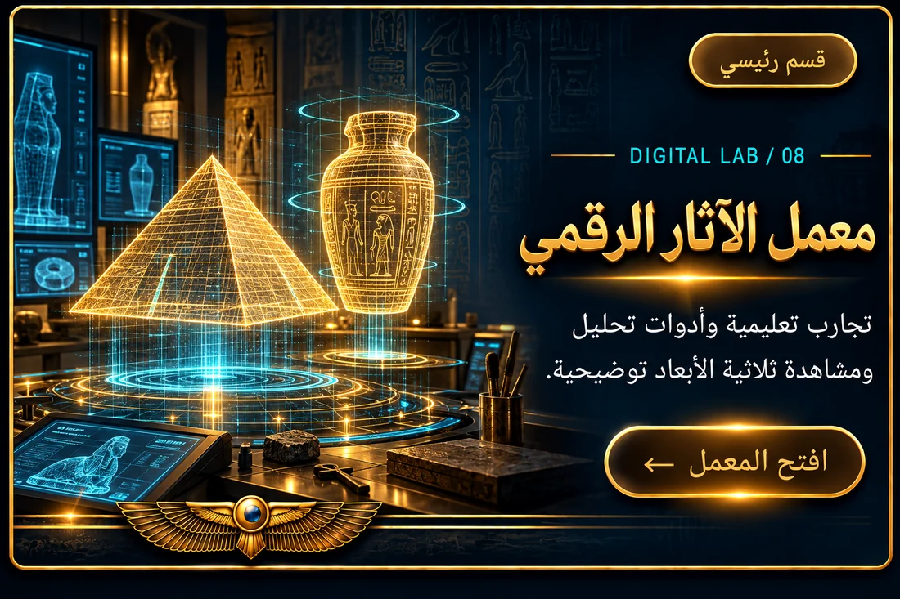
قسم رئيسيتجارب تعليمية وأدوات تحليل ومشاهدة ثلاثية الأبعاد توضيحية.
افتح المعمل ←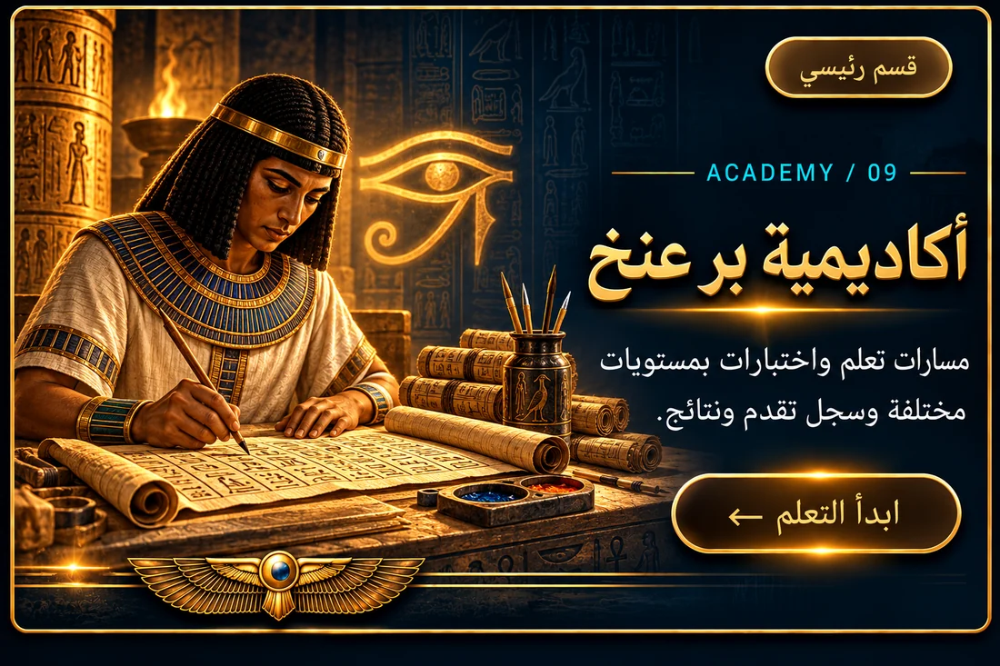
قسم رئيسيمسارات تعلم واختبارات بمستويات مختلفة وسجل تقدم ونتائج.
ابدأ التعلم ←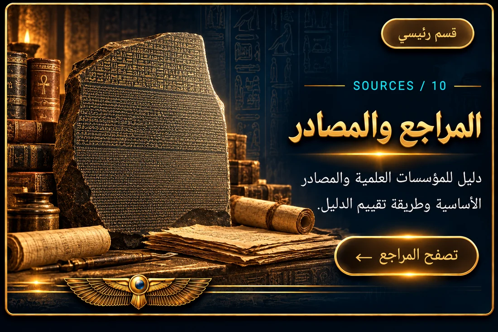
قسم رئيسيدليل للمؤسسات العلمية والمصادر الأساسية وطريقة تقييم الدليل.
تصفح المراجع ←أدوات ومسارات إضافية للمستخدم
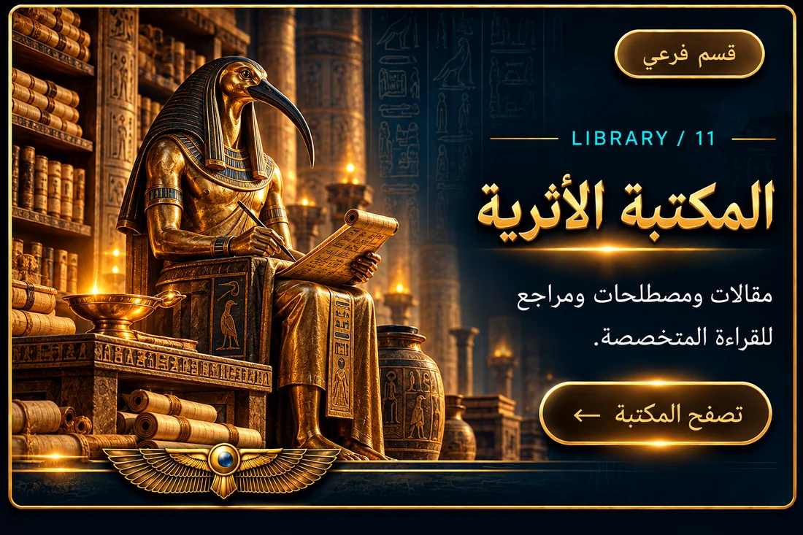
قسم فرعيمقالات ومصطلحات ومراجع للقراءة المتخصصة.
تصفح المكتبة ←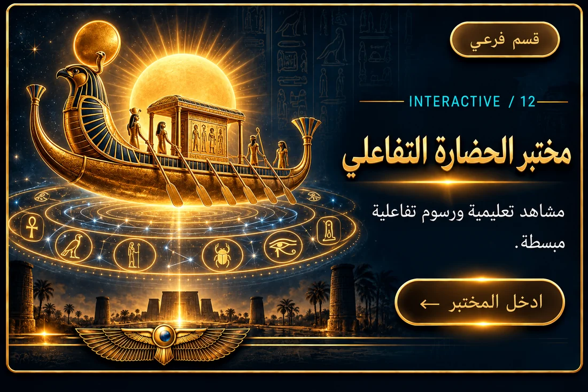
قسم فرعيمشاهد تعليمية ورسوم تفاعلية مبسطة.
ادخل المختبر ← قسم فرعي
قسم فرعيخريطة مصر الحديثة مع مواقع أثرية وإشارات واضحة.
افتح الأطلس ←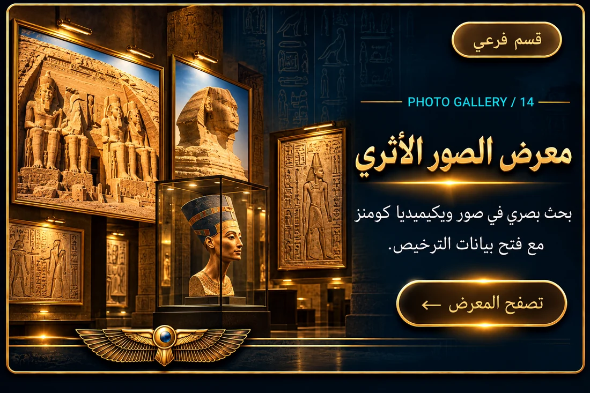
قسم فرعيبحث بصري في صور ويكيميديا كومنز مع فتح بيانات الترخيص.
تصفح المعرض ←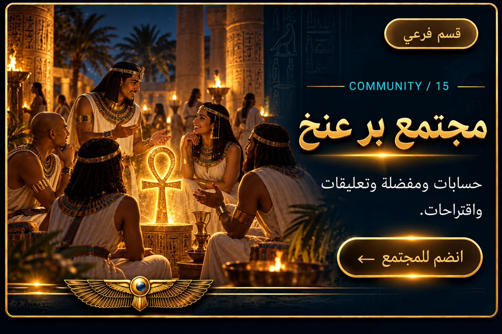
قسم فرعيحسابات ومفضلة وتعليقات واقتراحات.
انضم للمجتمع ←شاهد بعض أفكار المصريين القدماء في رسوم مبسطة قابلة للاستكشاف. اختر عنصرًا لعرض المعلومة المرتبطة به.
ارتفاعات تقريبية للأهرامات عند اكتمال بنائها، وليست ارتفاعاتها الحالية.
اختر اسمًا من مجموعة المعبودات لعرض صلته برواية الخلق الهليوبوليتية.
كتاب الأمدوات يقسّم رحلة رع في العالم السفلي إلى اثنتي عشرة ساعة. اختر ساعة لقراءة ما تصفه.
مخطط مبسط لبعض العناصر الشائعة في المعابد المصرية؛ اضغط على كل جزء.
استكشف المراحل العامة لعملية التحنيط كما ترد في الشروح التعليمية؛ اختلفت التفاصيل والمواد والمدة عبر العصور والطبقات الاجتماعية.
مشهد رمزي من التصورات الجنائزية: يُقارن قلب المتوفى بريشة ماعت، رمز الحق والاتزان والنظام.
تعرّف على مراحل العمل الكبرى من اختيار الموقع إلى كسوة الهرم. تفاصيل وسائل الرفع والنقل ما زالت موضع نقاش علمي.
اختر فترة تاريخية لعرض إطارها الزمني التقريبي وملامحها العامة. الحدود الزمنية إرشادية وليست تواريخ قطعية.
تعرف على حكام مصر القديمة عبر العصور، مع ربط كل ملك بأسرته وآثاره ومشروعاته وشواهد عصره.
اختر عصرًا لقراءة ملامحه السياسية والمعمارية والفنية وأبرز شواهده الأثرية.
من الجبانة الملكية إلى المعبد ومقابر الأفراد؛ اضغط على أي موقع لقراءة تاريخه وتخطيطه المعماري وفنونه وأبرز آثاره.
الأهرامات الكبرى وأبو الهول ومقابر الجبانة الملكية.
𓉐مجمع زوسر الهرمي وتطور العمارة الجنائزية في جبانة منف.
𓇳مجمع الكرنك ومعبد الأقصر ومناطق البر الغربي.
𓊹المعابد الجنائزية، ومن أشهرها معبد حتشبسوت ومعبد منتوحتب الثاني.
𓆣مقابر حكام الأقاليم ونماذج مهمة من فنون الدولة الوسطى.
𓅃معبدا رمسيس الثاني ونفرتاري، ومن أبرز عمائر النحت في الصخر.
𓂀تسعة موضوعات، لكل معلومة فيها مصدر محدد مذكور بجانبها. وما هو محل خلاف أو لم يُتحقق منه يُذكر صراحة.
استكشف المقالات الأثرية والكتب والمراجع وقاموس المصطلحات من خلال بطاقات المكتبة التفصيلية بالأسفل.
اختبر معلوماتك في أسئلة مستقلة، واكتب اسمك بالعلامات الهيروغليفية التقريبية، واستكشف مواقع مصر القديمة على خريطة تخطيطية.
ابدأ الاختبار لتظهر الأسئلة والاختيارات والتفسير بعد الإجابة.
اضغط على أي نقطة لعرض الموقع وأهم آثاره والفترة المرتبطة به. الخريطة بتصميم طبقي ذي عمق بصري ونقاط قابلة للضغط، وهي خريطة استكشافية تخطيطية وليست نموذجًا جغرافيًا مساحيًا أو تضاريس ثلاثية الأبعاد.
استكشف مجموعة من المواقع الأثرية المصرية. مواضع العلامات تقريبية لأغراض الاستكشاف، ويجب الرجوع إلى المصادر المتخصصة قبل استخدامها في أعمال المساحة أو التوثيق.
تصوير تضاريسي تخطيطي لمجرى النيل والدلتا والصحراء، مع نقاط المواقع الأثرية. هذا النموذج ليس DEM مساحيًا ولا يُستخدم للقياسات أو تحديد الحدود الأثرية.
اضغط على إحدى النقاط الذهبية لعرض اسم الموقع ووصفه، أو اختره من قائمة الأطلس بالأعلى.
مجموعات موضوعية وسجلات تعريفية للقطع، مع الفصل بين البيانات الموثقة والقراءة التفسيرية. افتح أي سجل لعرض تفاصيله ومصدره.
كل سجل يوضح اسم القطعة، وتأريخها التقريبي، ومادتها، وسياق العثور عليها أو وظيفتها، ومكان حفظها، ورابطًا لمصدر يمكن مراجعته.
اختر سجلًا من البطاقات لعرض بطاقة تعريف موسعة ومصدر للمراجعة. السجلات الموضوعية تشرح أنواع القطع ولا تدّعي أنها قطعة متحفية بعينها.
ملاحظة توثيقية: لوحة نعرمر وحجر رشيد لهما سجلات/صفحات مرجعية محددة. بقية البطاقات مداخل تعليمية موضوعية وليست فهرسة لقطعة برقم تسجيل. لا تُستخدم الصور إلا بعد التحقق من شروط إعادة الاستخدام.
نماذج تعليمية مبسطة وأدوات تفاعلية لفهم العمارة واللقى الأثرية. النموذج ثلاثي الأبعاد التالي توضيحي وليس إعادة بناء أثرية دقيقة.
اختر عنصرًا من القائمة لتتعرف على وظيفته المعمارية بصورة مبسطة.
منصة معرفية رقمية تهدف إلى تقديم الحضارة المصرية القديمة بصورة دقيقة، تفاعلية، وممتعة؛ من خلال محتوى أثري موثق وتجربة استكشاف حديثة.
صاحب فكرة ومؤسس ومطوّر مشروع بر عنخ — PER ANKH
مشروع معرفي رقمي مستقل للتعريف بحضارة مصر القديمة وتوثيق تراثها وإتاحته بصورة تفاعلية حديثة.
اقرأ المنشأة بوصفها دليلًا تاريخيًا وفنيًا: الوظيفة، التخطيط، المادة، الزخرفة، والسياق الديني والسياسي.
لم تكن العمارة المصرية نمطًا واحدًا ثابتًا؛ فقد تغيرت أشكال المقابر والمعابد والمنشآت الملكية عبر العصور، كما اختلفت باختلاف الوظيفة والموقع والموارد المتاحة.
تُعرض هنا خطوط عامة مدعومة بمراجع مؤسسية، مع تجنب تقديم فرضية واحدة على أنها تفسير نهائي لجميع أساليب البناء.
تساعد المصاطب على فهم تطور المقبرة الملكية والنخبوية. ويُمثل مجمع زوسر بسقارة تحولًا مهمًا نحو البناء الحجري الضخم والهرم المدرج.
شهد عصر سنفرو تطورًا في بناء الأهرام ذات الأوجه المستقيمة، ثم صار مجمع الهرم يتضمن عناصر مثل المعبد الجنائزي ومعبد الوادي والطريق الصاعد، مع اختلافات بين المنشآت.
تتكرر في معابد كثيرة عناصر مثل الصرح والفناء المفتوح وقاعة الأعمدة وقدس الأقداس. لكن التخطيط لا ينطبق بصورة حرفية على كل المعابد أو العصور.
استُخدم الطوب اللبن والحجر الجيري والرملي والجرانيت وغيرها بحسب الوظيفة والموضع. تفاصيل رفع الكتل ووسائل النقل تختلف بين المشروعات وما زالت بعض آلياتها موضوع نقاش.
تُقرأ التماثيل من خلال المادة والحجم والوضعية والملامح والكتابة المصاحبة ومكان العثور عليها؛ ولا يكفي الشكل وحده لتحديد هوية القطعة أو وظيفتها.
تحمل مشاهد المقابر والمعابد دلالات دينية واجتماعية وسياسية. وقد تخضع المناظر لقواعد رمزية وطقسية، فلا تُعامل تلقائيًا باعتبارها تصويرًا حرفيًا للحياة.
الحياة خارج القصور والمعابد: الأسرة والعمل والغذاء والملبس والقرية والمدينة والاقتصاد.
نعيد بناء الحياة اليومية من مصادر متباينة: مناظر المقابر، والبرديات، والرسائل، والسجلات الإدارية، وبقايا المنازل والأدوات، والهياكل العظمية واللقى المادية. كل نوع من الأدلة له حدود وأسئلة مختلفة.
تنبيه منهجي: مناظر المقابر قد تكون مثالية أو طقسية، وتعكس منظور صاحب المقبرة ومكانته؛ لذلك لا تمثل وحدها حياة جميع السكان أو كل تفاصيل الواقع اليومي.
ارتبط النشاط الزراعي بدورة النيل وبالري والعمل الموسمي. وتساعد سجلات الأراضي والمحاصيل والمشاهد الزراعية في فهم الإنتاج والضرائب وإدارة الموارد.
تقدم بقايا النباتات والحبوب والأواني ومشاهد تقديم الطعام أدلة على أنماط الغذاء والتخزين والتحضير، مع اختلاف ما توفره الأدلة بين الطبقات والفترات.
تساعد مواقع مثل دير المدينة وكاهون وبعض أحياء المدن القديمة على قراءة تخطيط المنازل ومرافقها، لكنها لا تمثل بالضرورة جميع البيئات الاجتماعية.
تكشف الأدوات والورش والسجلات عن الحرفيين والكتبة والعمال والفرق المتخصصة، وتوضح أن المشروعات الكبرى اعتمدت على تنظيم مهني وإداري متنوع.
تُدرس المنسوجات والحلي وأدوات الزينة من خلال اللقى الأصلية والتمثيلات الفنية، مع الانتباه إلى اختلاف الملبس حسب المناخ والمكانة والوظيفة.
أتاحت البرديات واللوحات والأختام تتبع الحسابات والمراسلات وتوزيع المواد. ولم تكن مهارة القراءة والكتابة موزعة بالتساوي بين جميع أفراد المجتمع.
مسار تعليمي مستقل يجمع بنك الأسئلة والمراجعة الذاتية وسجل النتائج. كل جولة تعرض تفسير الإجابة ومصدرها بعد الاختيار.
اختر مجالًا وعددًا من الأسئلة. الأسئلة مأخوذة من بنك بر عنخ الحالي (300 سؤال)، والتصنيف الموضوعي آلي للمساعدة على المراجعة وليس حكمًا نهائيًا على موضوع السؤال.
نتائج الحساب المسجل تُحفظ في قاعدة بيانات Supabase، ونتائج الزائر تُحفظ محليًا على هذا الجهاز.
لم تُحمّل النتائج بعد.
بوابة للمصادر المؤسسية التي يستند إليها المحتوى، مع توضيح وظيفة المصدر وحدوده.
قوائم زمنية وصفحات فردية للملوك، وعناصر عن الآثار واللغة والدين. تختلف كمية المعلومات من صفحة إلى أخرى.
فتح المصدر ↗مقالات متخصصة وسجلات قطع متحفية ومواد عن الفن والعصور والملوك.
Heilbrunn Timeline ↗سجلات مقتنيات ومقالات عن البرديات والحفظ والكتابة والحياة في مصر القديمة.
Collection ↗مواد تعليمية عن المعابد والعمارة والطقوس، مرتبطة بخبرة جمعية الاستكشاف المصرية.
Learning resources ↗مقالات تمهيدية مرئية عن الفن المصري القديم والسياق التاريخي والقراءة الفنية.
Ancient Egyptian Art ↗مواد منشورة عن التراث والحياة اليومية، إضافة إلى الإطار الدولي لحماية التراث الثقافي.
UNESDOC ↗استكشف الصور المتاحة على ويكيميديا كومنز حسب الموضوع، وافتح كل صورة لمعرفة عنوانها ومصدرها وبيانات الإسناد المتاحة.
الصور تُحمّل عند الطلب من Wikimedia Commons. تختلف تراخيص الصور وشروط الإسناد من ملف لآخر؛ افتح صفحة المصدر قبل إعادة استخدام أي صورة، ولا يعني ظهورها هنا أن جميعها متاحة للاستخدام التجاري.
شارك معرفتك، احتفظ بموضوعاتك المفضلة، واقترح ما يساعدنا على تطوير الموسوعة.
احفظ الملوك والمواقع والموضوعات التي تريد الرجوع إليها. المفضلة مرتبطة بحسابك.
التعليقات تمر بالمراجعة قبل ظهورها للزوار حفاظًا على جودة النقاش والمحتوى العلمي.
هل تريد إضافة موقع أثري أو ملك أو مصدر أو ميزة جديدة؟ أرسل اقتراحك لفريق بر عنخ.
سجّل الدخول لمتابعة تعليقاتك واقتراحاتك.
سجّل حسابك الآن واستمتع بمزايا الموسوعة، واحفظ تقدمك وإنجازاتك، واحتفظ بنتائج اختباراتك واكتشافاتك الأثرية.